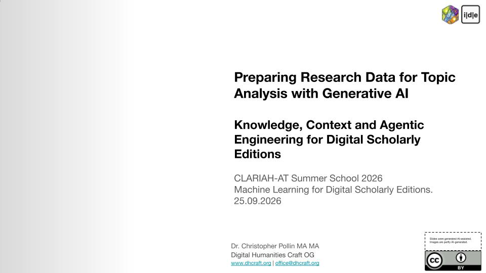

25 September 2026
Knowledge, Context and Agentic Engineering for Research Data Workflows & Digital Editions
CLARIAH-AT Summer School 2026: Machine Learning for Digital Scholarly Editions
Date 25 September 2026 Event CLARIAH-AT Summer School 2026 Audience digital humanities students, BA and MA level Teaching language English Status planned

Specialisation
One day in English inside a summer school on machine learning for digital scholarly editions. The corpus is specialised on research data workflows and edition work, so the framing runs through humanities research data as constructed representations, and the case material comes from two edition projects, the Jeanne Hersch workflow with the Zentralbibliothek Zürich and the Stefan Zweig workflow with Stefan Zweig Digital at the Literaturarchiv Salzburg. This is the only instance whose lecture notes are already written out in full, which makes it the reference text the other instances draw on.
The worked subject is a source-bound workflow on one Hersch document of 1973, two facsimile pages in French. The analytical unit runs from Hersch's own heading to the next contributor's heading, end exclusive, so physical page and analytical unit diverge and segmentation becomes a research decision rather than a technical step. Four model calls form a controlled progression in which each call adds exactly one control, and the archived run shows that the two middle calls pull material in from the neighbouring contributions while the fully specified call removes that contamination.
The methodological core is a three-way status contract. One field records how a passage carries a claim, a second records a named human comparison against the source, a third records disciplinary acceptance. A model-generated confidence value is deliberately unused, and the rule that model agreement is not scholarly verification is stated as such. Evidence and status discipline is a learning objective of the day rather than a side condition of the exercises.
Both participant exercises work on Zweig material. The first transcribes a manuscript page with a reusable prompt skeleton, a catalogue metadata block for the context section and an added rule against reconstructing readings from linguistic context, followed by a critical review of the generated transcription against the facsimile. The second takes that transcription as input for information extraction against an explicit schema, so the two representational transitions keep their own failure modes and acceptance criteria. Image and distribution rights for the facsimiles need institutional clearance, so the repository carries text and specification and no images.
The four model calls
- Full multimodal transcription of both pages, which establishes the text the later calls annotate.
- Open baseline without research question, segment boundary, codebook or schema.
- Generic schema run with the research question explicitly recorded as unspecified.
- Research-question-bound and evidence-bound annotation, which removes the scope contamination the two preceding calls show.
Module coverage
- Understanding Large Language Models, taught in full The greatest textual depth of this instance. The section on vision-language models carries the specialisation, because the failure it names, a contextually plausible reading unsupported by the facsimile, is what the transcription exercise has to expose.
- Prompt Engineering, taught in full The only module with a participant exercise of its own. The four-part structure of task, context, rules and output is introduced on a compact example and then applied to a difficult manuscript page.
- Knowledge and Context Engineering, taught in full Conceptual depth without an exercise, from the three-way distinction of what the project knows, what the model needs now and what it should do now, through to the properties of a knowledge document.
- Agentic Engineering, taught in full Carried by the two edition workflows as case material rather than by agent operation. Promptotyping appears as one section with the flow from maintained project knowledge through context selection and implementation to curated feedback.
- Critical Perspectives and Governance, distributed across the day The separation of evaluation, validation and scholarly verification stands as its own section; openness, local deployment and the governance dilemma sit inside the fundamentals sections.
Materials
- Slide deck (CLARIAH-AT Summer School 2026) The teaching surface for the day, editable up to the workshop.
- Lecture Notes (CLARIAH-AT Summer School 2026) Working surface in Google Docs. The canonical text state lives in the instance folder of the repository.
- Executable hands-on package Maintained outside this repository, in the workshop folder of the transcription pipeline repo.
- Slide export of the taught state Added to the instance folder after the workshop.
Provenance
This instance is a documented specialisation of the Full Slide Deck and the Full Lecture Notes, which are maintained once and cut into five modules. What this instance selects, cuts and adds is recorded in its repository folder, workshops/2026-09-25-clariah-at.